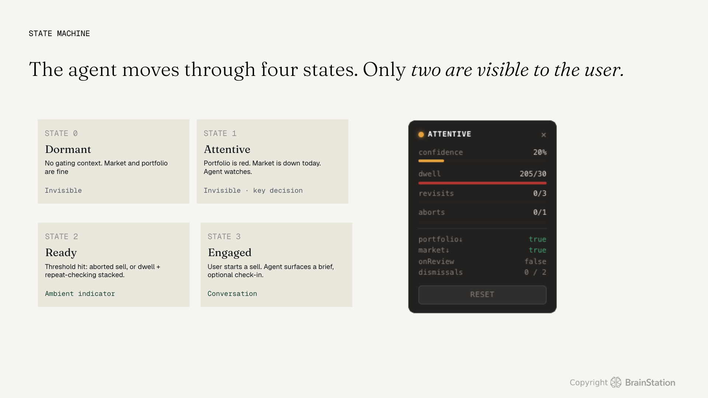
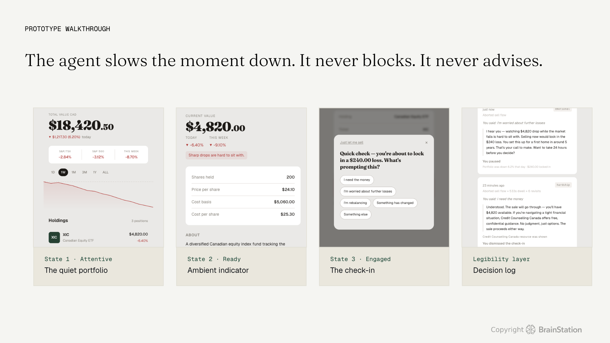
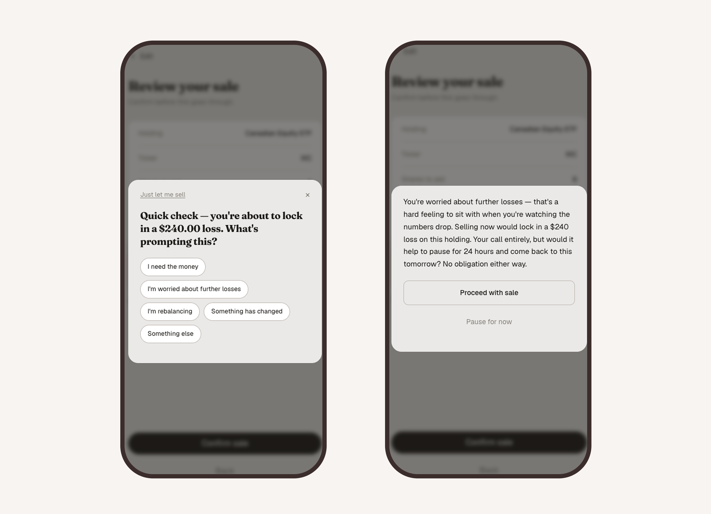
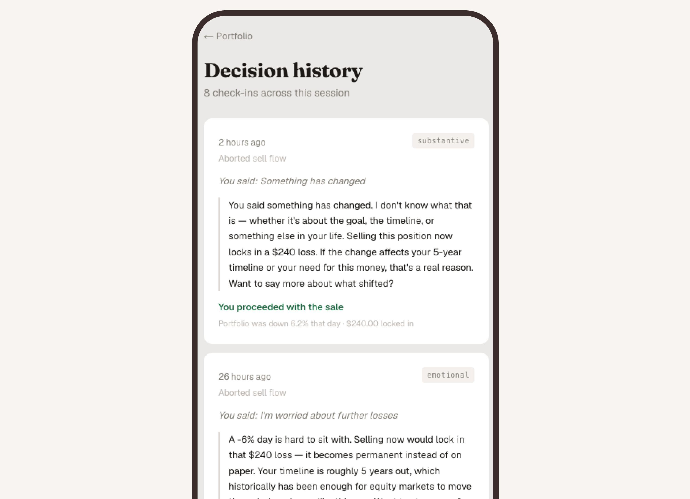

First-time investors sell at the bottom. Most apps make it easier.
A new investor, eight months in, first real account, opens the app during a downturn. Sees red. Closes it. Opens it again before lunch. Doesn't know if this is normal. The behaviour has a name: myopic loss aversion. Losses feel about twice as bad as equivalent gains feel good, and frequent checking sharpens the asymmetry until selling at the worst possible moment starts to feel like the responsible thing to do.
I know investing is a long game… but it's hard not to panic when you see red everywhere.
— Avelina, 26, first-time investor (research persona)
The usual app response is one of two things. Nothing, or a generic "are you sure?" modal. One ignores the moment. The other condescends to it. Neither earns trust when it actually matters.
Design challenge: How might an AI agent intervene at the panic-sell moment without taking the decision away from the user, without predicting the market, and without speaking when it hasn't earned the right to?
The interesting design problem isn't the intervention. It's the silence around it.
Most AI products are racing to do more. More suggestions, more automation, more presence. Research into AI behavioural-bias failures kept surfacing the same pattern: systems that try harder to help often make things worse. They over-trigger, train people to ignore them, and quietly tip into advice. A finance agent that tries to "solve" panic by being more assertive is the failure mode, not the fix.
That reframed the project. The spine of the case study isn't what the agent says. It's when the agent doesn't speak, and why.

Four states. Only two are visible to the user.
The agent designs its own restraint.
The Check-In Agent is one feature inside a simulated Canadian investment app, scoped to one moment in one user's life: their first real downturn. The agent runs as a four-state machine. Two states are invisible by design.
In Dormant, nothing is wrong. In Attentive, the conditions for panic are present — portfolio in red, market down — and the agent is watching, but the user sees nothing. This was the key decision: surveillance without performance. An agent that signals it's watching changes the behaviour it's trying to read. In Ready, behavioural signals have crossed a threshold and an ambient indicator appears. In Engaged, the user has actually initiated a sell, and the agent surfaces a brief, optional check-in.
The whole design rests on one constraint: the agent never blocks. The path to execute the sale is always visible, always one tap away. The agent's job is not to stop the action. It is to make sure the person taking it knows what they are doing and why.

The four main moments, end to end.
Hierarchical signal stacking, not single triggers
A single behavioural signal (dwell time on the portfolio, repeat app opens) is too noisy on its own. Acting on one of them produces false positives, trains the user to ignore the agent, and turns intervention into noise. The trigger model is hierarchical: an aborted sell flow is the strongest single signal of hesitation and can fire on its own. Everything else has to stack. Anxiety alone is not enough. Hesitation is.
Tradeoff: A user who panics without hesitating will not be checked in on. The agent accepts the false-negative risk because the false-positive cost is higher: an agent that cries wolf is an agent that gets dismissed before it ever matters.
Two gating conditions that no signal can override
No behavioural signal fires unless the user's portfolio is in the red and the market is down today. Both gates must be open. This sits underneath the trigger logic as a non-negotiable filter, because a user selling on a normal day has a normal reason. The agent only ever shows up in the conversation it was built for.
Tradeoff: Real panic that happens against a flat-market backdrop will go unaddressed. The scope cut was deliberate. One scenario, designed properly, beats five scenarios designed at the surface.
The agent asks the user to articulate. It does not articulate for them
The check-in is three sentences. It names the user's actual numbers, states what selling now would lock in, and asks one question: what's prompting this? The agent doesn't guess at the user's emotional state. "You seem scared" is forbidden in the system prompt. "A lot of people find this part hard" is permitted. The user's answer is what does the work — speaking aloud the reason for selling is often enough to surface whether the reason is substantive, emotional, or absent.
Tradeoff: Some users will type "I just want to" and proceed. That's the correct outcome. The agent's job isn't to extract a better answer. It's to give the user one chance to hear their own.
Failure modes designed in, not bolted on
The system prompt is mostly a list of refusals. If the user dismisses the check-in, the agent steps aside and logs silently — max two engagements per session, same message never twice. If the user asks for advice, the agent redirects without giving any. If the user names hardship, the agent acknowledges, confirms the sale is going through, and offers one verified resource. If the user pushes back on the agent's right to be there, the agent agrees: the check-in is optional, the sale is yours.
Tradeoff: The agent will sometimes step aside when staying might have helped. That's the design. An agent that doesn't accept dismissal is an agent that has stopped working for the user and started working on them.

The check-in surface.

The decision log.
A working agent that exercises judgment about its own silence.
A working prototype deployed at checkin-agent.vercel.app, simulating the portfolio, the signal accumulation, and the check-in surface. The agent itself runs on Claude via a system-prompted API endpoint. The trigger logic, voice principles, hard constraints, and failure modes are baked into a single system prompt that holds across the prototype's full scenario.
The restraint posture stayed clear of the advice and suitability zone that triggers CSA oversight — an alignment with Canadian regulatory guidance that was lucky in origin and intentional in the end. The most useful evidence the design works is what the agent does not do. It does not predict. It does not recommend. It does not block. It does not appear when it hasn't been earned.
The case study's positioning held: most AI products show what an AI does. This one shows when it doesn't speak, and why.
Try the prototypeHow I'd know the restraint is working.
Restraint is hard to measure because success looks like absence. These are the signals I'd track to tell whether the silence is earned or just missing.
Interruption precision — is the agent only speaking when it should? The share of check-ins that land on a genuine loss-aversion moment versus a false trigger. A high false-positive rate means the thresholds are firing on noise, and every unearned interruption erodes the one thing the agent trades on: that when it appears, it matters.
Reflection-to-hold rate — does the pause change the decision? Of the users who see a check-in mid-panic-sell, how many hold versus proceed. The agent isn't trying to win — a user who articulates their reason and sells anyway is a correct outcome. But a check-in that never moves the decision either way is decoration, and this is how I'd tell the difference.
Trust retention — do people keep it on? The rate at which users dismiss, mute, or disable the agent after an interruption. Restraint that reads as nagging gets switched off. If retention holds after a check-in fires, the agent has stayed on the right side of the line between useful friction and interference.
Two things I'd pressure-test before shipping.
Get real behavioural data before locking the thresholds. Every signal threshold in the prototype is an educated guess informed by behavioural finance literature. Three minutes of dwell. Three app opens an hour. An aborted sell. Those numbers are defensible in a class presentation. They are not defensible in production. The trigger logic is only as good as the data calibrating it, and the only honest way to calibrate it is to watch what actual first-time investors do during an actual downturn. The architecture is right. The numbers need to be earned.
Bring compliance in at the design phase, not the review phase. The agent's restraint kept it on safe regulatory ground — the constraints in the system prompt happen to line up with CSA expectations around advice, suitability, and behavioural-design risks. That alignment was a hunch with research behind it, not a substitute for legal review. In a real deployment, a Canadian compliance lawyer belongs in the design conversation from the first session, not the last one. The check-in language, the failure modes, the hardship resource, the decision log — each one has a regulatory dimension that a designer can sense but cannot certify.